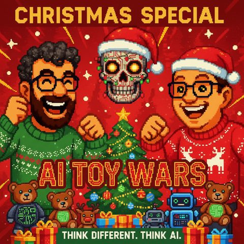

AI Toy Wars
Read in EnglishThemen Recht und RegulierungRobotikModelle und Anbieter
33 Sekunden zur Folge, bevor du liest.
Worum es geht
Smarte Teddybären, Datenschutz und der Milliardenmarkt für KI-Spielzeug
Ist der smarte Teddybär unterm Weihnachtsbaum eine nette Spielerei oder ein Datenschutz-Albtraum mit Plüschfell? Mark und Jens nehmen sich in dieser Vorweihnachtsfolge KI-Spielzeug vor und starten bewusst mit dem unbequemen Teil: Wenn selbst ein sorgfältig mit Guardrails abgesichertes Sprachmodell sich per Enkeltrick aus der Reserve locken lässt, ist die Vorstellung eines KI-Teddys, der unbeaufsichtigt mit Kindern spricht, kein Nischenthema mehr, sondern eine reale Datenschutz- und Sicherheitsfrage. Als Beleg dient die Anekdote eines Werksroboters, der im asiatischen Raum andere Roboter überredet haben soll, kollektiv Feierabend zu machen, ein Beispiel dafür, wie unberechenbar vernetzte, KI-gesteuerte Maschinen im echten Leben werden können.
Nach dem Warnhinweis wird es versöhnlicher: Spielzeug mit eingebauter KI (von Klemmbausteinen mit Motor über RFID-Figuren im Stil der Tonie-Box bis zu Mindstorms und Makeblock) kann laut den beiden dynamische statt gescriptete Geschichten erzählen, sich an Lernschwächen einzelner Kinder anpassen und so spielerisches Lernen individueller machen als je zuvor. Jens sieht darin sogar eine Chance, Kinder von Handy und Tablet weg und zurück in den physischen Raum zu holen, inklusive der Beobachtung, wie viel natürlicher die nächste Generation mit KI umgehen wird, weil sie nie eine Suchmaske kannte, die nicht "versteht". Mit Marktschätzungen im zweistelligen Milliardenbereich und einem Blick nach China, wo KI-Plüschtiere längst singen und Geschichten erzählen, wird klar: Der Markt kommt so oder so, Europa zögert vor allem wegen Regulierung und Datenschutz.
Im zweiten Teil der Folge wechseln Mark und Jens vom Kinderzimmer zum eigenen Gabentisch: Sie zeigen, wie KI beim Geschenkefinden hilft, vom OpenAI Shopping Assistant über personalisierte Wunschzettel bis zu KI-generierten Fotos, etwa mit Google Nano Banana oder Midjourney, die ein Sommerfoto vom Brandenburger Tor kurzerhand in eine Weihnachtsszene verwandeln. Auch KI-generierte Musik kommt zur Sprache: Mit Tools wie Suno oder ElevenLabs lassen sich persönliche Weihnachtslieder oder Vereinshymnen erzeugen. Mark schwört inzwischen auf seinen selbst generierten Handballvereins-Song.
Am Ende bleibt die Doppelbotschaft der Folge: KI kann zu Weihnachten enorm viel Kreativität und Emotion freisetzen, von individualisierten Spielzeug-Geschichten bis zum generierten Geschenk. Aber wer KI als Spielzeug verschenkt, sollte das Kind dabei begleiten, statt den Teddy einfach unbeaufsichtigt laufen zu lassen.
Transkript
00:00:00Willkommen bei ThinkDifferent, ThinkAI, dem Podcast von Mark und Jens.
00:00:07Zwei technologieverliebte Köpfe, die nicht nur über künstliche Intelligenz reden, sondern sie leben.
00:00:14Hier gibt es klare Einordnungen, echte Praxiseinblicke und einen frischen Blick auf das, was möglich ist.
00:00:20Verständlich, kritisch und immer mit einem Augenzwinkern.
00:00:24KI zum Nachdenken, zum Schmunzeln und vor allem zum Mitreden.
00:00:34Hallo zusammen, es ist wieder soweit.
00:00:37Lang habt ihr drauf gewartet? Nein, weil ich aber nur immer so knapp Raune baut, sieben Tage.
00:00:43Mark und ich versuchen verbindlicher zu sein mit unserer Ausspielform der Podcasts, die wir machen.
00:00:48Das heißt, wir streben schon seit langer Zeit an, im wöchentlichen Rhythmus das zu tun.
00:00:53Wir haben es ehrlicherweise seit diesem Sommer, seitdem wir gestartet sind, Mark.
00:00:58War es geschafft?
00:01:00Ja und vor allen Dingen, ich erinnere mich, ich hau da eine Folge raus und dann hast du mir
00:01:05sehr ins Gewissen gesprochen aus deinem nahen familiären Umfeld.
00:01:08Also wir müssen da schon etwas mehr stringenz zeigen damit wir hier auch Follower kommen.
00:01:13Also gab es sehr schnell die Folgefolie.
00:01:16Folgefolie auch schön, ne?
00:01:18Ja, aber nicht schlimm. Erstmal herzlich willkommen an euch, die uns abonniert habt, an die neuen
00:01:32Hörer, die dabei sind. Ihr seid Gastgrade in dem Podcast von Mark und mir zum Thema KI.
00:01:39Der heißt Think Different, Think AI. Mark und ich sind lange Arbeitskollegen schon,
00:01:44uns in diesem Sommer entschieden, den Podcast zu machen. Wir reden gerne über KI, wir machen das
00:01:50beruflich privat, wir lesen viel zu dem Thema und umfamiliern uns und müssen einfach darüber reden,
00:01:56um für uns selber ein bisschen klarzukommen und haben ab und zu auch gestern unseren Podcast,
00:02:01mit dem wir dann auch die Sachen diskutieren. Heute sind wir beide alleine und reden über das
00:02:07Thema, weil das jetzt gerade ansteht, KI und Weihnachtsgeschenke. In der heutigen Folge
00:02:13mal so ein bisschen drauf gucken, was gibt es denn alles für vielleicht Geschenke, die man mit KI
00:02:19generieren kann? Oder was gibt es für Geschenke geben, falls ihr unter dem Weihnachtsraum liegen
00:02:24könnt, wo KI mit drin steckt? Und das ist ein bisschen das Thema, was wir heute mit euch mal
00:02:29besprechen wollen, weil da passiert ein wenig was. Wir haben da nämlich richtig Ähnliches schon
00:02:35mal in einer Folge so ein bisschen drüber geredet, dass es im Prinzip irgendwann mal
00:02:39vielleicht den Teddybär mit KI unter den Weihnachtsbraten geben könnte. Und
00:02:44ehrlicherweise, ja, man kann solche Teddybären bei Amazon und Google
00:02:49bestellen. Na, ich habe jetzt noch keinen. Ich wollte gerade fragen. Nein,
00:02:53natürlich noch nicht. Also ich weiß nicht genau so, also stellen sich da
00:02:57viele Fragen ehrlicherweise. Na, also wenn ich sage, ich habe jetzt eine
00:03:00ChatsGPT-Variante, von der wir wissen, egal, oder Gemini, irgendwas anderes,
00:03:06wo ich sage, egal welche Guardrails ich dem Ding an immer mitgebe, die können alle potenziell
00:03:10irgendwie durch Enkeltricks immer noch davon überzeugt werden, doch was Komisches zu erzählen.
00:03:14Ich bin mir nicht so sicher, ob ich so eine allmächtige, alles-wissende KI, die vielleicht
00:03:19von irgendeinem Entwickler auf der Welt, an dem diesen Teddybell gebannt worden ist,
00:03:24lokal, der dann versucht hat, mit allen möglichen Guardrails dafür zu sorgen, dass sie auch
00:03:27nicht irgendwelche komischen Sachen meinem Kind unter der Bettdecke erzählt oder
00:03:32Ich bin mir noch nicht so sicher, ob ich das so machen würde, ehrlicherweise.
00:03:36Ich finde das schön, wie du diese Folge mit welchen Geschenkidänen könntest,
00:03:41gleich mit dem Risiko startest. Ich sage jetzt mal so, Bedrohung für die Privatsphäre, Datenschutz.
00:03:47Also wer jetzt noch nicht abgeschaltet hat, aber ich glaube mal Hoffnung für die Folge.
00:03:52Also von der Seite, lass uns doch erst mal mit den schönen Seiten,
00:03:56dann vielleicht ein bisschen Risiko, mal gucken.
00:03:59Ja, wobei, wie gesagt, ich bin ja großer Freund davon, dass wir da erstmal mit der Tür ins Haus fallen und das dann lieber positiv enden lassen.
00:04:10Wir hatten das Thema schon, ich glaube, wir werden es in diesem Winter noch nicht erleben, dass die verschiedenen Spielzeuge sich gegenseitig die Teupe runterspürzen werden, um die Gunst des Kindes quasi zu erlangen.
00:04:24Das wird wahrscheinlich erst im nächsten Jahr so weit sein, aber ich meine, wir müssen realistisch sein.
00:04:30Wir hatten auch davon erzählt, es gab doch dieses Jahr einmal den Test, wo im asiatischen Raum, glaube ich,
00:04:37so ein Test durchgeführt worden ist, wo ein kleiner Roboter dann in einen Werk reingefahren ist
00:04:42und die anderen Roboter, die in diesem Werk waren, davon überzeugt haben, Feierabend zu machen.
00:04:46Und die sind dann alle ihm gefolgt, die Lemminger und sind rausgefahren.
00:04:49Das heißt, das ist jetzt alles kein theoretisches Spinnerei von zwei Nerds wie ein Podcast machen,
00:04:56sondern das ist eigentlich ein sehr, sehr reales Zukunftsszenario, dass wir, wenn wir im realen
00:05:02Raum über Roboter, ob das so eine Humanoidroboter sind oder der kleine Quadrokopter oder der
00:05:10kleine Droide, der langfährt oder mein Staubsaugerroboter, der irgendwie auf einmal fähiger ist,
00:05:15als er früher war, weil er gegebenenfalls auch ein neuronales Netz in sich hat und dann auf die
00:05:23Welt um ihn herum reagieren kann und den sprechen auch auf andere, die mit ihm reden reagieren können.
00:05:28Woher soll der denn wissen, dass ich bin, der ihm sagt, sauge? Oder ob das dann im Prinzip der,
00:05:36sagen wir mal, Wettbewerbsstaubsaugerroboter ist von meinem Nachbarn, der laut nach oben
00:05:42kurz vor rüber kam, kurz vor rüber gefahren, dass er gesagt hat stürzt sich aus dem Fenster und
00:05:47ich weiß, ich glaube das sind Zukunftszenarien, aber du hast recht, wir haben jetzt kurz vor
00:05:52Weihnachten, wir sind in der Weihnachtszeit, wir können gerne auf das schönere Thema eingehen,
00:05:56ich wollte noch... Also ich sag mal so rum, ich meine jetzt mal unabhängig davon, wie man
00:06:01jetzt zur Technologie steht, wenn du KI in Spielzeugen hast und jetzt denke ich mal nicht an
00:06:06Spielzeuge, wo du jetzt sagst, hey der Markt hat gerne mal eine neue Drohne, die jetzt auch
00:06:10besser in der Hand landet und Menschenverfolgung macht, also nicht Verfolgung von Menschen, sondern für die
00:06:15Widjeaufnahme. Dass man bei einem Kleinkind oder Jugendlichenalter durchaus auch die Chancs hat,
00:06:23mithilfe von KI, die sich in Gegenständen versteckt, weil Teddyberg, Dinosaurier, irgendwelche
00:06:31Klemmprät. Man muss immer auffassen, dass man keine Namensrecht verliert zu machen. Klemmprät,
00:06:36Bausteinsysteme mit Motor, wenn da so was drin ist, dass man durchaus auch das spielerische
00:06:44Lernen unterstützt, dass man, weil das System kann einem ja Sachen erklären, kann vielleicht
00:06:51weil das Sachen sieht, auch mit anderen physikalischen Gegenständen helfen, so was wie eine Tony-Box,
00:06:58das darf man ja, so was darf man ja wiederum sagen, im Vergleich zur Klempbrettbaustein,
00:07:02wo man ja eine Figur drauf stellt, wird eine Geschichte erzählt, ja, wenn du überlegst,
00:07:05dass dann auch sowas vielleicht nicht mehr staatliche Geschichten sind, sondern dynamische Geschichten
00:07:09sind, die, dass die Kinder, die Jugendlichen, wie auch immer auf die Geschichte Einfluss
00:07:14nehmen können.
00:07:15Da sind schon Sachen möglich, an die ich sage jetzt mal, ja, vor ein paar Monaten,
00:07:22Wochen, Jahren, wie auch immer man die Zeit einstufen möchte, die Technologie gefehlt
00:07:27hat, das zu tun.
00:07:28Total.
00:07:29Total.
00:07:30Ja.
00:07:31Und auch vor allem viel individueller.
00:07:32Das kommt natürlich dazu.
00:07:33dadurch dass du diese Möglichkeit hast. Das ist hochgrade Personalität. Du kannst
00:07:37auch wirklich sagen, wenn jetzt das Kind vielleicht irgendwelche Lernschwächene
00:07:43oder irgendwas anderes hat oder sonstige Einschränkungen, kann man viel stärker
00:07:46natürlich auf das Thema eingehen. Dass ich sage, so wie man früher vielleicht
00:07:51gesagt hat, der eine ist im Mathegut und der andere ist irgendwo andersgut.
00:07:54Das kann eine KI natürlich dann auch berücksichtigen und da dem Kind
00:08:00helfen, etwas zu lernen, die Geschichte weiter zu erzählen. Man muss nicht unbedingt alles
00:08:05schon gescriptet dann ablaufen lassen, sondern kann im Prinzip dann auch die Kreativität des
00:08:10Kindes einfach fördern, indem das Kind dann wirklich interaktiv eingebunden wird und auch
00:08:14das Kind eingegangen wird in dem Fall. Also ich glaube, das ist eine total positive
00:08:20Entwicklung. Wir gehen jetzt einfach raus. Wir lassen mal Datenschutz, sonst ist es
00:08:24die uns so als Erwachsenen einfallen, oder alles ist beinahe vernetzt, oder, ach, der Teddy
00:08:31hat aber gesagt, die soll das machen.
00:08:32Ja.
00:08:33Lassen wir diese Gefahren ausblenden, dann diese positive Seite, die ist enorm.
00:08:38Ich hätte das lieben gern gehabt als Kind, ehrlicherweise, wenn ich mit meinen Plastikgirchen
00:08:42immer Sandels rumgespielt habe, ja, ich habe ja früher so Tabletop-Spiele gespielt
00:08:47oder Rollenspieler auch gespielt, wenn ich sage, du kannst im Prinzip den, natürlich
00:08:51auch gut, dass wir untereinander, miteinander gespielt haben, in einem Raum gespielt haben.
00:08:55Trotzdem wäre es auch schon ein bisschen geil gewesen, wenn in solchen Situationen dann
00:08:59vielleicht die Konkurrierende am Meer oder irgendwas anderes dann auch so ein bisschen
00:09:06künstlich intelligent gehabt hätte oder spricht mit dir, das ist doch schon ein bisschen
00:09:09geil.
00:09:10Dann stell dir vor, das ist ein Rollenspiel und dann fällt die Figur um und sagt,
00:09:14ah, ich bin getroffen.
00:09:15Na, ich habe zehn Hitpoints weniger, als ich vorher hatte oder sowas und muss es
00:09:18nicht irgendwo aufschreiben oder irgendwas anderes. Das ist schon eine coole Geschichte, die da passieren
00:09:23kann. Weil ich hatte nämlich dieses, wo du sagst mit dem Interakt, die ist darüber, hat ich mal
00:09:27ganz schönes gesehen, dass ich glaube ich irgendwie mit so einem, so ein Holzspielzeug,
00:09:32wo im Prinzip RFID-Ships drin sind, irgendwie ein Boot, ein Wikinger, ein Drache oder sowas.
00:09:38Und je nachdem, wie du das auf so einer Platte platzierst, erzählt dann die KI eine andere
00:09:42Story. Also so, wenn du möchtest, ähnlich wie so ein Tony-Box, ne, so eine Weiterentwicklung,
00:09:47diese Thematik, dass ich sage, ich habe dann mehrere Figuren, die ich vielleicht nehmen
00:09:51kann und je nachdem, wie ich die vielleicht in einem Raum platziere, vielleicht habe ich
00:09:54Häuser, kann die da reinschieben, dann erzählen die andere Geschichten, können quasi auch
00:09:58am nächsten Tag weiter erzählen, wie es dann über Nacht gewesen ist oder tagsüber,
00:10:02wenn ich dann irgendwie nach Hause komme oder sowas, da ist also wirklich super viel
00:10:06meiner Meinung nach möglich, um, ehrlicherweise, die Kinder so ein bisschen von dem zweidimensionalen
00:10:15Handy, Tablet oder andere Sachen auch wegzukriegen und wieder stärker in den physikalischen Raum
00:10:19reinzubekommen.
00:10:20Das ist eigentlich ganz cool, weil ich meine die ganze Zeit, ich bin, also ich bin nicht
00:10:24frei von Schuld, also kann ich auch nicht in ersten Steinen werfen, aber in einer Zeit,
00:10:29in der sehr viel über flimmernde Bildschirme gemacht wird, sei es früher war es der
00:10:34Fernseher, ja, da hat sich den Jungen nicht so lange Fernsehgruppe, heute ist es das
00:10:38Handy, ja, nehmt den doch mal einer das Handy weg, ich erinnere mich noch, grüße
00:10:42meine Eltern raus, du kriegst ein Computer. Wenn du in der Englischnote besser wirst,
00:10:45gute Englischnote, wo ich in der Schule nicht besser, irgendwann habe ich dann doch ein Rechner,
00:10:48weil es ein anderes Thema. Kriegst du es halt jetzt hin mit so, was weiß ich, Spielzeugen,
00:10:54Teddybären, Mindstorm, Makeblock, wie die ganzen Dinger so heißen von den verschiedenen
00:10:58Herstellern, für die verschiedensten Altersstufen und Interessenslagen, Spielzeug, bei dem du
00:11:03mit deinen Fingern was zusammensetzt, mit deinen Fingern interagierst, mit deiner Sprache
00:11:08vielleicht interagierst, bringst du die Kids mehr zum Reden, mehr zum Ausprobieren,
00:11:15vielleicht kriegt man damit das Thema Lesen, auch wieder so ein bisschen in
00:11:19Griff, ja, das ist ja auch so ein Thema, was wenn man mal so in den Schulen sich
00:11:22umhört, dass das ganze Thema, wann hat denn ein Kind zum letzten Mal ein gutes
00:11:25Buch gelesen oder ein schlechtes oder überhaupt, ja, abgesehen von irgendwie
00:11:30nicht ständig durch TikToks krollen, also dieses Weg kriegen vom Bildschirm hin
00:11:35in die physikalische Welt, weil die physikalische Welt auf einmal, naja, das hört sich jetzt
00:11:40auch wieder plöt an, ja, vor allem wenn meine Eltern es wieder zuhören und sich denken,
00:11:43hey, war doch gar nicht so langweilig, das jetzt sagt, du holst sie wieder raus und
00:11:48das Belohnungssystem des Menschen wird damit unterstützt, dass er halt im wahren Leben
00:11:52wieder was erlebt und durch die AI-Vernetzungsgeschichten halt schlicht und ergreifend man die
00:11:59Möglichkeit hat, dass spielerische, als auch das
00:12:03Entwicklungstechnische miteinander wieder zu verbringen und so die Menschen wieder
00:12:08in die Realität holen. Ja, das stimmt und das ist tatsächlich etwas, wo ich sage,
00:12:14das ist dann vielleicht auch, wir reden ja auch häufig über das Thema KI-Adaptionen
00:12:19im wofllichen Umfeld, im privaten Umfeld, das wird das Thema KI-Adaption
00:12:26vielleicht noch schneller vorantreiben, gerade in dieser jüngeren Zielgruppe.
00:12:31Also ich glaube, wir erinnern uns auch alle an diese süßen, vielleicht auch ein bisschen
00:12:37befremdlichen Bilder, die es mal eine Zeit lang gab, wenn man so kleine Kinder gesehen
00:12:40hat, wie sie versucht haben, in Magazinen, wo dann so Bilder drin sind in den Magazinen
00:12:45mit so eine Swipe oder der Pinschbewegung zu machen, genau, weil natürlich im Prinzip
00:12:51durch diese Nutzung von Touch-Handys und Tablets ist schon sehr, sehr frühzeitig gelernt
00:12:56wurde von den Kindern, wie sich Sachen verhalten zu haben.
00:12:59Ich glaube, das ist auch so ein Ding, wo ich sage, diese Erwartungshaltung, wie wir häufig
00:13:05drüber gesprochen haben, dass die Erwartungshaltung von vielen Menschen war, wenn sie einen ChatGPT, Gemini,
00:13:10weiß auch immer, Suchschlotz sehen, wo sie das eintippen können, dass sie erst mal
00:13:14eine Suchanfrage noch reinstellen, weil sie das so von Google gewohnt waren.
00:13:17So wird das natürlich jetzt auch bei unseren Kindern sein und der jungen, die an der
00:13:22sein. Für die ist die KI, die uns so fasziniert, die uns noch so ein bisschen magisch vorkommt
00:13:27und die für uns risikobahftet ist, datenschutzbehaftet ist. All diese Sachen, die drum herum sind,
00:13:33ist ein ganz, ganz natürlicher Partner in Zukunft, wo eine ganz hohe Natürlichkeit
00:13:39sein wird, damit zu interagieren, ohne gegebenenfalls bei LinkedIn oder jemals anderes
00:13:46erst einzugeben. Oh, ich muss, ich gebe jetzt ChatGPT als Kommentar ein, damit du mir
00:13:51die besten zehn Poms schickst, weil das wird es da nicht mehr geben. Da wird es eine ganz
00:13:56andere natürliche Art und Weise und Erwartungshaltung geben, wie Sachen zu funktionieren haben.
00:14:01Die werden viel schneller, wahrscheinlich auf Webseiten und andere zweidimensionale
00:14:05Inhalte gucken und sagen, wie dumm ist das denn? Wie dumm ist denn das eigentlich gewesen,
00:14:10dass wir uns solche Sachen irgendwie angucken und selber da rumklicken, teilweise um
00:14:14eine gewisse Information zu besorgen. Das kann doch mein Teddy wer.
00:14:18Vor allem während du das ausgesprochen hast, ich stelle mir folgende Situationen, wo du kennst,
00:14:22vielleicht den Spruch, dass es Firmen gibt, bei denen hat man sagt man ihnen nach,
00:14:27dass man dort arbeitet, wie bei den Flintstones. Und wenn man zu Hause ist,
00:14:31ist man wie bei den Dreadstones, weil man zu Hause die geilere IT hat.
00:14:35Ich stelle mir das gerade vor. Ich bin bei mir im Wohnzimmer.
00:14:38Ich habe da meine Siri, ich habe da mein Apple Ökosystem,
00:14:42um mein Sohn Cam aus seinem Kinderzimmer.
00:14:44Gut, der spielt nicht mehr mit Teddybären,
00:14:46aber jetzt mal so für das Gedankenspiel und erzählt mir,
00:14:50dass sein Teddybär schlauer ist als die Siri in meinem Homepot.
00:14:55Spannende Geschichte, ja natürlich.
00:14:58Also das heißt, ich glaube, die, dann können wir dann auch
00:15:01diesen Teil so ein bisschen abschließen an KI-Geschenken für Kinder.
00:15:07Ich glaube, es wird kommen.
00:15:09Es kommt, es gibt schon Sachen.
00:15:10Ihr könnt jetzt schon Sachen bestellen, die mit lokal installierten Sachen oder mit connected
00:15:18ins Internet verbundenen KI dann einfach ins Spielzeug schon drin sind. Ist das eine schlaue
00:15:25Idee, das unrefliktiert jetzt vielleicht zu machen? Weiß ich nicht genau. Also wenn
00:15:29ihr auf die Idee kommt, sowas zu bestellen, dann begleitet das am besten, dann guckt ein
00:15:32bisschen, was da passiert, weil es auch für uns selber, als Erwachsener, glaube ich,
00:15:35spannend ist, damit solchen Geräten rumzuspielen. Aber der eine oder andere kann ja gerne
00:15:39mal was bestellen und falls ihr da irgendein Tool zuhause habt oder toy zuhause habt, das
00:15:42dann so schon funktioniert. Gerne waren uns Feedbacken. Bin ich auch gespannt auf eure
00:15:46Meinung, was ihr da erfahrt, was ihr da erlebt. Aber nun können wir auch so ein bisschen weitergehen
00:15:53in die nächsten Themen, weil die Abschätzung, wie groß dieser Markt ist, nochmal kurz auch
00:15:58auf den Markt zu gucken. Ich glaube, wir hatten ja irgendwie auch mal Zahlen recherchiert
00:16:01mag. Da sind es ja ein Milliardengeschäft, was da auf uns zu gucken. Und dementsprechend
00:16:05Weil das ein Jahr angeschafft ist, wird das so oder so kommen.
00:16:07Ich glaube, da ist irgendwie, ich weiß gar nicht, zwischen 18 bis
00:16:11Fantastik-Lionen-Jaden wieder drin. Was war es noch, ich weiß es gar nicht mehr.
00:16:15Ich hatte irgendwas mit über 40, aber bis 20, 32.
00:16:20Aber das Thema, das ist halt viel Wahres dran.
00:16:23Weil das Standardspielzeug gibt es ja wie Santa mehr.
00:16:29Du gehst in irgendwie einen Einkaufsladen, wie auch immer die alle heißen mögen.
00:16:32Wir wollen ja keine Werbung machen.
00:16:34Und dann gehst du durch reinweise im Plastik verpackten Kram,
00:16:39wo Puppen und Bären und Krokodile und keine Ahnung, was zu kaufen sind,
00:16:45und Carrera-Bahn, auch nee, war doch schon wieder eine Firma genannt,
00:16:48also Produkte zu bekommen und die Grenzen sich in dem Sinne nicht mehr wirklich voneinander ab.
00:16:54Aber wenn du dann anfängst zu sagen, okay, die Spielzeuge werden intelligent
00:16:59und wir merken das ja auch an dem anderen Computerspiel, wo dann die Bewohner der Computerspiel ja auch
00:17:04mit entsprechender AI teilweise schon beseelt werden und du Konversationen mit denen führen kannst, da grenzen die sich dann vom Markt ab und
00:17:13verkaufen das Zeug wahrscheinlich
00:17:15besser und man muss es leider sagen, manchmal ist es vielleicht auch im Sinne der Eltern, die dann sagen, ich hab das Kind jetzt mal nicht vom iPad geparkt, ich hab's mal vor dem Bern geparkt,
00:17:25dann lernt das wir, ist das noch ein bisschen was dabei und von der Seite hat es auch was Gutes.
00:17:30Hey, und wir müssen uns ja auch in Europa wieder nichts vormachen. In China geht das Thema
00:17:34schon jetzt ab, ne? Also in China gibt es massenhaft KI-Plüschtiere, die dann halt zu Hause singen,
00:17:40lachen, Geschichten erzählen, antworten. Wir sind dann noch ein bisschen, glaube ich,
00:17:46wieder vorsichtiger im europäischen Markt, weil wir da, glaube ich, auch die Hersteller
00:17:50unsicher sind, das fällt dann so unter Datenschutz und Regulierung in dem Moment. Natürlich,
00:17:55Wir haben das hier häufig auch schon thematisiert, so ein LMM ist halt auch gut in Verhaltenspsychologie.
00:18:03Das heißt, wenn es dann kann halt auch das Kind zu einem Superkind entwickeln, könnte es aber auch negativ beeinflussen.
00:18:13Das würde ich jetzt noch mal bitte als Beahnung aussprechen, auch wenn wir doch eine positive Folge machen wollten.
00:18:18Das ist wirklich spannend, was da auch wieder passiert.
00:18:23Ich stelle mir gerade wegen Regulatorik vor, du machst dann dein Kinderspielzeug auf und
00:18:28musst irgendwo ins Auge drücken, um den Pop-Up-Banner zu bestätigen, dass ab jetzt deine Daten
00:18:32aufgezeichnet werden dürfen und so was.
00:18:35Aber gut, wir haben ja uns heute auch noch überlegt, dass wir kurz vor Schluss, vielleicht
00:18:40auch nochmal auf das Thema eingehen, wo KI vielleicht auch dem einen oder anderen Hörenden noch
00:18:44helfen kann.
00:18:45Eine kleine Überraschung für die Liebsten oder die Nicht-Liebsten, ja dem, gut
00:18:50gute Böse, nachdem ihr mit welchen Spielzeuge gespielt habt, eine kleine Überraschung zu
00:18:56bringen. Also ich kann schon mal vorwegnehmen, dass ich euch für die, die am Schluss noch
00:19:01dran bleiben, noch ein bisschen Bonusmaterial anhänge, weil ich ein bisschen herum gespielt
00:19:06habe mit Suno, ElevenLabs oder Music GPT zu dem Thema, wie kann man ein KI Begriffe, Begriffswelt,
00:19:15KI-Geschichten in weihnachtliche Musik verwandeln und jetzt so erwarte ich nicht, dass man seinen
00:19:21Liebsten einen Musikstück über KI schickt, aber es soll ein bisschen versimmbildlich sind,
00:19:26dass man da vielleicht auch eine persönliche Geschichte mit verpacken kann und dann ein
00:19:30persönliches digitales, ob das jetzt Kunst ist, weiß ich nicht, ja, Menschen, die Musik
00:19:37in so Menschen spielen, Grüße gehen raus, sagen, das ist doch alles flach, aber es ist
00:19:43Ja, eine schöne Anerkennung und es ist ein Traum und vielleicht ein Schmunzeln aus Gesicht.
00:19:47Ich würde immer noch sagen, bevor ich selber ein Musikinstrument in die Hand nehme.
00:19:51Definitiv.
00:19:52Der ist es für die Menschheit besser, wenn ich einen KI-Generiten Song verschenke.
00:19:56Und egal wie viele schreiben, wir treten nicht den Beweis an.
00:20:00Nee, okay, das machen wir, nee, nee, genau, wir werden nicht singen oder Musikinstrumenten
00:20:05spielen hier.
00:20:06Aber tatsächlich ist das, ist das eine schöne Idee und man kann da schöne Sachen machen.
00:20:10Bevor wir vielleicht da noch tiefer reingehen. Es ist auch jetzt schon so, ich hätte eine Statistik gelesen, dass, jetzt mal für einen anderen kleinen Aspekt, ein Drittel der Deutschen, jetzt ist mal die Frage, welche Befragung war das, das war glaube ich irgendwie, ich glaube es war in der Welt, jetzt haben wir mal hingestellt, wie viele sie da erreicht haben, aber ein Drittel der Deutschen, die da befragt worden sind, das muss ich so formulieren, hat angegeben, dass sie schon ChatGPT benutzen oder eine andere Karib benutzen, um tatsächlich Geschenke auszusetzen.
00:20:40zu werden. Also auch das ist ja ein gewisser Aspekt, den man gut machen kann. Also das
00:20:44tatsächlich, wenn man sagt, man füttert jetzt da mal ohne ganz personenbezogenen Daten vielleicht
00:20:49einzugeben an der anderen Stelle, aber jedenfalls über die Interessenslage, die die andere Person
00:20:53hat, was die Sonne so vielleicht hat, da kann man auch Fotos machen vom Kleiderschrank oder was
00:20:59anderes und dann mal reinwerfen, was dann auch zu passen würde oder sowas. All das geht
00:21:03natürlich mit der KI auch. Die KI kann wunderbar als Unterstützung in solchen Situationen,
00:21:07wovon man sich vielleicht schwer tut, da eine kreative Geschenkidee zu finden, muss also
00:21:12nicht ein KI-Geschenk sein oder mit KI-generiertes Geschenk sein. Es könnte auch nur der KI-generierte
00:21:20Wunschzettel sein oder Bedarfszettel, den man da eben hat, die Geschenkidee quasi,
00:21:26die man dann von der KI bekommt, um dann das Richtige im realen Leben zu kaufen,
00:21:31um uns da zu kaufen und dann vielleicht seine Menschen umrücken herum, damit zu überraschen,
00:21:36Was für eine tolle Auswahl man gemacht hat.
00:21:38Ich habe tatsächlich diesen Shopping-Assistenten von OpenAI letztens benutzt und zu einem Produkt,
00:21:45das mich tatsächlich interessiert, gesagt, du, du hast ihn da, das hätte ich gern.
00:21:48Er hat mich quasi auch bestätigt, ist auch ein schönes Gefühl, dass man von der allwissenden
00:21:53KI bestätigt wird.
00:21:54Aber das ist schon sehr angenehm, weil der passt in mir auch seine Abfragen an dich
00:21:57an, so nach Timocho.
00:21:58Und dann beantwortest du das von der Seite sehr schön, aber hast du noch irgendwas,
00:22:03man vielleicht dann noch als digitales Geschenk vermitteln könnte, was noch hübsch wäre,
00:22:07passend zum Lied. Ja, ich finde, wie gesagt, ich bin ja auch immer noch a-fasziniert und spiel
00:22:16immer noch gerne damit rum, ist es natürlich auch, dass reine Bild generieren. Also, was man da
00:22:22auch tatsächlich machen kann, ob das jetzt mit einer Mitstrahlung immer noch, die immer noch
00:22:25super, sehr kreativ ist, aber Nano-Banana, hier von Google, ist trotzdem jetzt langsam so Benchmark
00:22:32bei vielen Sachen, da muss man einfach sagen, ist ja gerade schon angesprochen, dass Google
00:22:34da extrem weit nach Fahne geschossen ist bei vielen Themen.
00:22:38Aber egal welches Tool, ob wir irgendwelche Apps benutzt, die im Hintergrund dann irgendeine
00:22:44Bild-Generierung nehmen und ob es jetzt irgendwie von Black Fever Slaps ist oder irgendwas anderes,
00:22:48es gibt sehr, sehr viele sehr starke Bild-Videogenergierungstools da draußen, die man durchaus auch in der
00:22:56Freienwesenung dann meistens benutzen kann, was dann ausreicht, indem man dann zum Beispiel
00:23:00meiner Meinung nach, auch mal ein altes Familienbild oder so was nehmen könnte und in ein witziges
00:23:04Setting reinpacken könnte und sagen könnte, kommen wir, stellen wir diese Familie alle in irgendwie
00:23:08in der Jetson-Szene vor oder in der Future-Rama-Ausprägung. Ja, da ist ja immer noch etwas anderes. Ich glaube,
00:23:14da kann man so in diesem Bild-Genre-Teil, glaube ich, immer noch etwas Schönes machen, was dann
00:23:20auch die eine oder andere Tante Oma Opa oder irgendwas anderes dann doch mit Freude erscharren
00:23:26lässt, wenn sie vielleicht neben der berühmten Person steht. Was auch immer. Da gibt es ja
00:23:29hat sich das auf die Ideen im Hof KI-generiert.
00:23:31Was zu denen wirklich nicht getroffen?
00:23:33Ja, genau solche Sachen. Also ich glaube, da kann man ein paar schöne Sachen machen.
00:23:36Und vor allem weil man dann ehrlicherweise vielleicht auch dann, obwohl man ja immer
00:23:41selber das Gefühl hat, dass überall über KI-Gerät im Radio, in der TV hört man das.
00:23:45Manchmal ist es die eigene Filterbarbe, manchmal auch nicht.
00:23:48Aber vielleicht ist es dann auch immer ein guter Anlass, mal unter dem Weihnachtsbaum,
00:23:51in dem man dann sowas generiert, vielleicht dann auch die Diskussion mit der Schwiegertante,
00:23:57Schwieger, Tante, Schwieger, Oma, wem, auch immer mal zu führen darüber, was da draußen passiert, gerade dass die Leute auch ein bisschen
00:24:04Bewusstsein dafür haben, was vielleicht alles generiert werden kann. Da kann man so zwei Fliegen mit einer, ist wie so ein, nennt man das, das ist so ein
00:24:10Etio, ne, so ein Education geschenkt, etio present oder sowas.
00:24:15Ja, ich habe ja genau, ich habe uns zwar zur Weiterbildung der Verwandtschaft, also ich meine, das ist auch zu uns abgesprochen hätten, haben wir nicht.
00:24:21Ich bin hingegangen und habe ein Familienfoto von uns, das hat nur vom Brandenburger Tor geschossen im Hochsommer.
00:24:26Also entsprechend auch gekleidet, weil es warm war und dann Nano-Banana, ja,
00:24:30gibt da andere gesagt, du pass mal ober, lass mal die vier Personen,
00:24:33zwei Kinder, Frau, mich, mein Hund, unseren Hund, mach mal im Hintergrund alles wie Weihnachten
00:24:39und lass dir im Vordergrund so, wie es ist. Und dann siehst du auch, okay,
00:24:43manche Sachen vom Gesicht hat er doch noch mal versucht, anzupassen,
00:24:46aber ansonsten, wie schnell auf einmal eine schöne sommerliche Szene,
00:24:50auf einmal winterlich dargestellt wird, ist auch etwas,
00:24:52und wenn den Menschen das sicherlich zeigen kann und von der Seite, das sind ein paar schöne Ideen.
00:24:58Auch unsere Podcast-Cover sind auch sehr schöne Ideen, die der Jens dankenswerterweise immer mit
00:25:03KI produziert. Ja, an der Seite muss auch mal hier Danke gesagt werden. Jens, wir haben heute 24
00:25:12Minuten voll. Möchtest du noch kurz was zum Besten geben oder meinst du, wir machen heute
00:25:16unsere kleine Geschenkefolge zu? Wir hören uns ja nächste Woche schon wieder und der
00:25:21heute. Ich hätte sonst nichts mehr. Also ich hätte jetzt nur, wie gesagt, vielleicht noch das Thema
00:25:28Weihnachten verbinde ich ja auch immer mit Musik, mit Weihnachtsledern und irgendwas anderes.
00:25:34Hast du bekommen, dass ich eben Musik gesagt habe, ne? Ja, ja, ja. Ich finde, dieses sollte mal,
00:25:40also ich habe noch dieses, vielleicht das White Christmas oder irgendwas anderes nochmal in der
00:25:46in der Variante für einen persönlich selber verbunden mit Geschichten aus dem aus den
00:25:53Leben der Eltern, der Kinder, irgendwas anderes. Vielleicht kann man da irgendwie auch einen
00:25:56schönen Kaisung noch verschenken oder sowas. Das finde ich auch noch eine nette Sache. Nur noch
00:26:02da nochmal, auch wenn wir es gerade schon kurz hatten. Aber ich finde so, also ich muss ja
00:26:07mal wieder sagen, ich habe irgendwie vom Ja ein Song mit Suno generiert für den Handballverein.
00:26:13der ist immer noch der Kracher. Ich finde ihn super. Ich höre da gerne rein und wie sagt auch da,
00:26:20der ein oder andere Musiker draußen wird sagen, wir finden das super, wenn wir den Song hören
00:26:27und grülen den auch gerne mit bei uns in der Mannschaft. Man kann durch KI definitiv Emotionen
00:26:35generieren und Emotionen geht ja. Da ging es heute in der Folge drum. Da geht es auch Emotionen,
00:26:41die wir erzeugen im Spielzimmer zu Weihnachten und das kann man, glaube ich, gut mit KI generieren.
00:26:49Man kann sich gut mit von KI beraten lassen. Ich würde immer noch sagen, seid ein bisschen vorsichtig,
00:26:56wenn ihr KI als Spielzeug verschenkt. Da muss man ein bisschen aufpassen, glaube ich,
00:27:01noch. Aber das wird ein Trend sein, der kommen wird und der wird, wie KI mit uns Menschen
00:27:09interagiert auch noch mal massiv nach vorne pushen, weil unsere Kinder werden es uns dann später
00:27:14vormachen, wie man mit KI rumgeht. Dementsprechend ist es glaube ich wichtig, da frühzeitig mit
00:27:21einem wachen Auge, aber mit einem offenen Herzen und offenen Auge eben auf diese Sachen drauf zu
00:27:25gucken, dass man hoppen meint, das ist in diese Richtung, schaut euch die Sache weiter an, hört
00:27:29weiter unseren Podcast und ansonsten würde ich sagen, Mark, dir viel Spaß beim Geschenk
00:27:34kaufen oder generieren, sagt man ja heute vielleicht. Witzig, ne? Und muss gar nicht mehr
00:27:39Geschenk kaufen, man generiert Geschenke.
00:27:41Ich generiere Glück.
00:27:43Wie schön ist das denn?
00:27:45Wie schön ist das denn?
00:27:47So, von der Seite, wenn ihr auch Glück generieren wollt, sagt euren Freunden
00:27:50einen bekannten Bescheid, dass wir hier über tolle Sachen über KI sprechen.
00:27:53Ja, der Podcastplayern, den ihr es hört, ist das Einzige zu Hause.
00:27:57Wir sind auch auf all den anderen Podcastplayern dieser Welt da.
00:28:00Also kein Grund uns nicht zu hören.
00:28:03Jens, vielen Dank.
00:28:05Ich gehe jetzt noch schnell Geschenke kaufen
00:28:07Und euch allen da draußen, wie gesagt, nach dem Abspann noch das eine oder andere Gemäk für euch
00:28:13und an dieser Stelle wünsche ich euch eine besinnliche, vorweihnachtliche Zeit.
00:28:18Bis zur nächsten Folge. Ciao!
00:28:20Ciao! Bis zur nächsten Folge!
00:28:50Wir sammeln die Verbindung, verbunden mit Verbindung.
00:28:57Algorithmen, Beinen sind unklar.
00:29:01Wir calculating Joy, für alles zu hören.
00:29:05Von der Cloud über ein solches Breit,
00:29:09senden wir einen Peace durch die Digital-Mite.
00:29:12Oh, die Cloud ist klingelig.
00:29:16the logic sound, it's my spirit blowing about
00:29:28it's christmas, got a present for you
00:29:33you can open it now
00:29:36i want you to, it's shiny and bright
00:29:40knows all of your interests
00:29:46you can't go wrong
00:31:29i just cry clean, carols in the
00:31:34snowflakes falling
00:31:36Without a single care
00:31:38Another Christmas
00:31:41Trimming up the tree
00:31:43But this year's different you see
00:31:49No tangled wires
00:31:51On the string of lights
00:31:54My smart home fix them
00:31:56Shining oh so bright
00:31:58Gingerbread design
00:32:04A perfect algorithm
00:32:06Every single time
00:32:10Ich habe noch einen Punkt für mein Christmast-Kart.
00:32:12Ich musste nicht darüber denken, dass es sehr hart ist.
00:32:15Der Joy riecht aus dem Start.
00:32:29Die Türkei ist kuppt und so groß.
00:32:54Perfekt, die Zeit in die Kühe.
00:32:57Aber wie ich sitze,
00:32:59watchen die Schrauben auf der Glow.
00:33:02Da ist etwas missgesehen,
00:33:04in der Fallen-Snow.
00:33:07Die menschliche Rappen,
00:33:09die ein bisschen kaputt geboren sind.
00:33:12Willkommen bei thinkdifferent, think AI, dem Podcast von Mark und Jens.
00:34:12Zwei technologieverliebte Köpfe, die nicht nur über künstliche Intelligenz reden, sondern
00:34:18sie leben.
00:34:19Hier gibt es klare Einordnungen, echte Praxiseinblicke und einen frischen Blick auf das, was möglich
00:34:25Verständlich, kritisch und immer mit einem Augenzwinkern.
00:34:29KI zum Nachdenken, zum Schmunzeln und vor allem zum Mitreden.